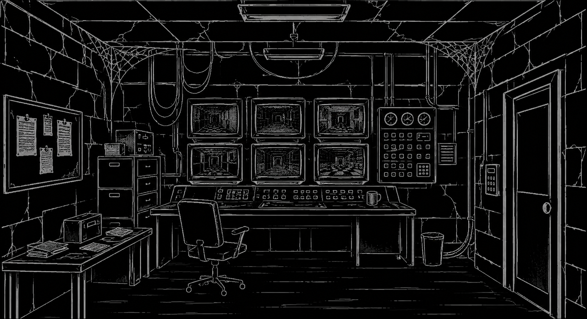

Sala de Segurança
Uma sala com quatro monitores desligados. A bateria portátil encontrada no armazém pode ligá-los.
Depois, cada monitor mostra uma parte da casa. O filtro UV revela um dígito em cada canal, na ordem de 01 a 04.
O pé de cabra está nesta sala e serve para abrir a porta emperrada do armazém.
Ir ao armazém